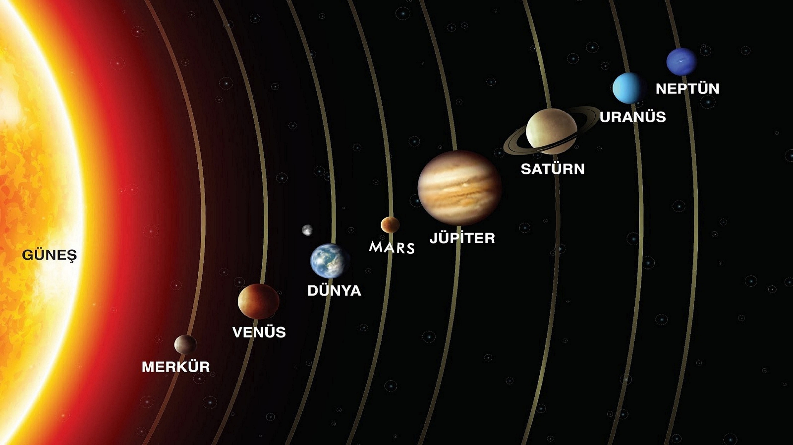
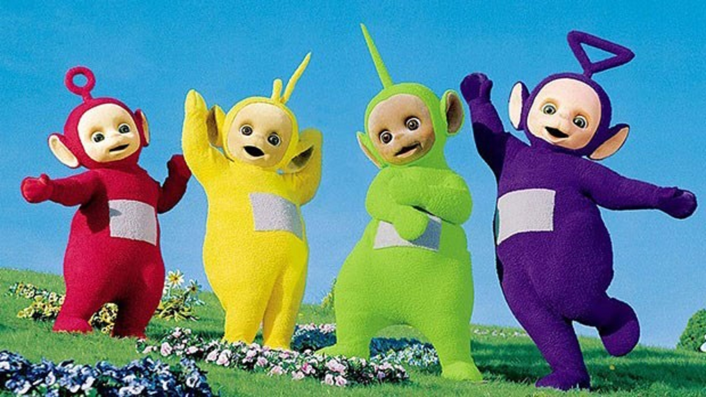

FREKANS
Verilen boşluğa URL girerek içinde her kelimenin kaçar defa yer aldığını (frekans) bulabilirsiniz.
Ayrıntıları Gör...ANAHTAR KELİMELER
Bir URL girerek, bu metindeki en önemli kelimeleri(anahtar kelimeler) görebilirsiniz.
Ayrıntıları Gör...BENZERLİK SKORLAMASI
Girilen iki URL arasında bir benzerlik skoru elde edebilirsiniz.
Ayrıntıları Gör...

SİTE İNDEKSLEME VE SIRALAMA
Girilen URL'ler arasındaki benzerlik oranını hesaplayıp sıralama yapabilirsiniz.
Ayrıntıları Gör...

EŞ-YAKIN ANLAM BULMA
Girilen URL içindeki anahtar kelimelerin eş/yakın anlamlılarını öğrenebilirsiniz.
Ayrıntıları Gör...